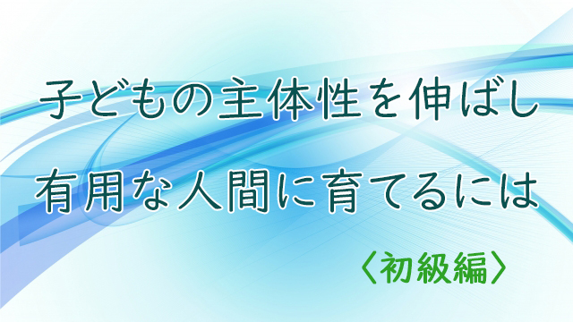

親が子育てにあたっていちばん心がけるべき点は何だろう。私は「子どもの主体性を育てる」ことだと思っている。
主体性とは、まず自分の頭で考えることができること、他人の顔色をうかがったり世間の常識やルールに盲目的に従うのでなく、あくまで自分軸に従って行動できる人間の性質である。
しかしこれは案外難しい。主体性ある人間を育てようと言えば大抵の親は「そうしたい」とうなずくだろうが、現実には真逆のことをやっているからだ。下手に主体性を発揮したら周囲とぶつかったり、いじめられたりしかねない。何といってもこの国では「空気を読むこと」が尊重されるからだ。
従って多くの親も子どもに対して周囲への配慮や他人とうまくやるための無難な行動基準を教えがちだ。自分もそう教育されてきたからだ。
しかしこの状況も長くは続かない。社会は急速に変わっている。今までのように何となく周囲に合わせて生きる、多数派に迎合して生きるだけの「自分軸をもたない」人間は片隅に追いやられる。そんな時代が来つつある。
特にいまコロナ感染で世界は大変なことになっているが、この騒動が終息すると人々の価値観は世界規模で変わることは想像に難くない。それは単に仕事のやり方や経済活動のあり方が変わるだけではない。
もっと根底からの変動になる。本当の意味での生命の大切さ、生きることの意味、命を充実させて生きることの大切さ、効率優先の生き方や人間対人間、人間対自然のこれまでのあり方への深い反省を考察。
要するに人々の人生観、世界観そのものの一大転換が予測される。これまでもその兆候はあった。構造的な社会変革の兆しはあったのだが、今回の大規模感染によってその変化は加速されるだろうと感じている。
ここで問われるのはこれまでの価値体系が崩壊した後、新しい生き方を模索し得る真に主体的人間か否かであり、そのような主体性ある人間こそが次の「新しい社会」を創造できるという予測である。
前置きが長くなったが、そんなわけで私自身もブログで書くことから動画で発信するという新たな試みにチャレンジしてみることにしたい。
これはセミナー等がライブで行えないからという理由もあるが、下手な文章より下手な動画であっても直接語りかけることに意味を感じるからだ。
さっそく今回は、その「主体性を育てる法」について話してみたので興味のある方は見て下さい。
今回は第1回として主体性を育む親と、主体性を育てきれない親の違いについて基本的な話をしています。初級編としてまずは親の皆さんがあまり抵抗を感じないであろう、分かりやすい話をしました。
次回は同じテーマで少し難しい話、ディープな内容も加えてみたいと思うのでよろしくお願いします。
いゃあ、動画を撮るのも意外と難しいですね。ライブと違って相手の反応が見えない！
私は特に相手の反応（リアクション）を見て話し方や内容を微調整しながら話すタイプなので、まったく相手の顔を見られないのはホントに手応え感がない。
質疑応答もできないので互いの応酬による共感や活発な情熱の交流が得られないのは淋しいが仕方ない。
動画をご覧になっての感想や質問があればぜひお寄せ下さい。といってもこのホームページもリニューアル工事がストップしているのでどこまで受け取れるのかは不明です。
とりあえず今週から週一回（月曜か火曜に）アップしていく予定です。よろしくお願いします。